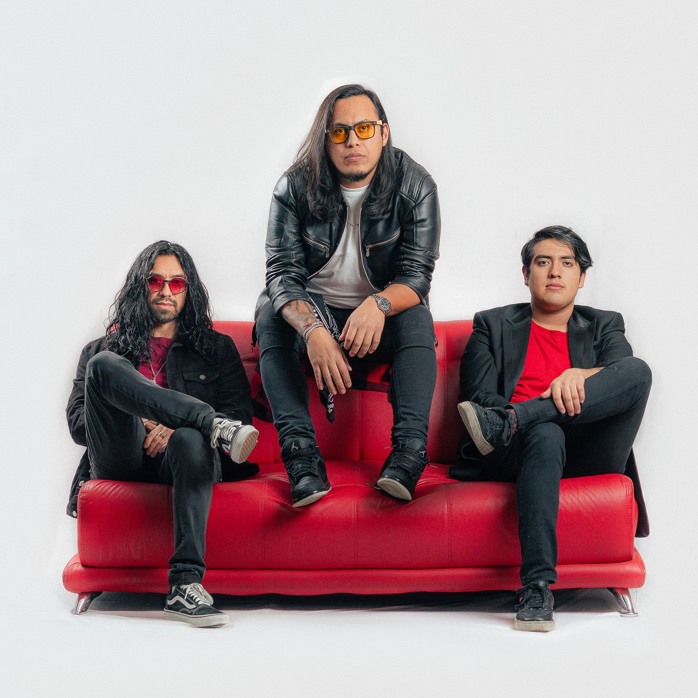

VARDÖK: EL PODER MELÓDICO DE PERDICIÓN

La agrupación capitalina Vardök celebra su primer año de vida en los escenarios con el lanzamiento de su tercer sencillo: “Perdición”. Este tema llega para consolidar su presencia en la escena independiente de la Ciudad de México, ofreciendo un sonido que equilibra la potencia con la elegancia.
En "Perdición", Vardök logra un balance fascinante entre la fuerza del metal y la sofisticación del hard rock melódico. La pieza se percibe como una obra de madurez temprana, donde los ganchos pegajosos y los riffs sólidos construyen una pista diseñada específicamente para la intensidad del directo.

PROMESA INDEPENDIENTE
Con una energía que invita al movimiento constante, el sencillo reafirma por qué Vardök es considerada una de las promesas más interesantes del rock independiente actual. La producción profesional y el videoclip oficial que acompaña al track refuerzan una propuesta visual y sonora de alto calibre.

ANÁLISIS: PERDICIÓN
- ESTILO: Hard Rock melódico con base Metal Alt.
- HITO: Celebración del primer aniversario de la banda.
- OBJETIVO: Consolidación en la escena independiente.
- DIRECTO: Diseñado para generar movimiento en el escenario.